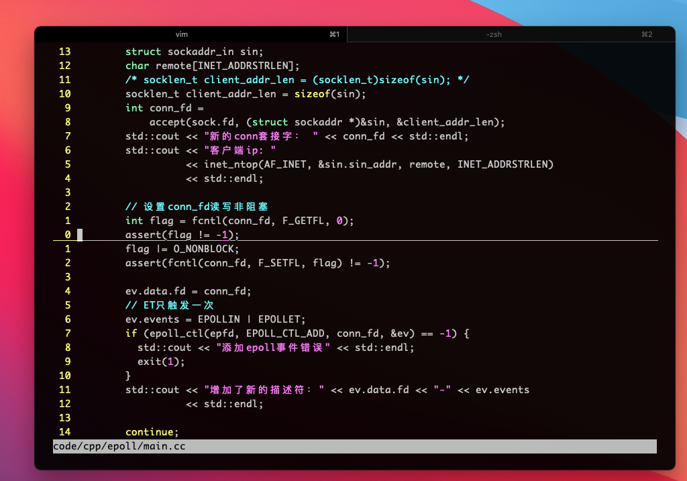

vim 及其配置

vim 是什么⌗
vim 是一种编辑方式，编辑唯一的要求是定位光标，比如调到某函数，修改该函数的参数。 vim 本身也可以打造出 IDE。
为什么用或不用 vim?⌗
优点： 输入高效，其实熟练以后不用动脑子，就是肌肉记忆。想象一下，小时候和朋友 QQ 聊天时有什么负担吗？没有，我们打字打得飞起，就那种感觉，vim 习惯后和 QQ 打字并没有任何区别。那么为什么我们熟悉了 QQ 打字还有学 vim 呢，vim 可以用来移动光标，比如移动到一个论文的第二章，或者，移动到一个函数的函数名，或者删除括号里的参数。
缺点： vim 作为编辑器本身并不好用，轻量但是功能不强(和其他编辑器比较)，比如很多 java 做开发的会直接点击运行，然后程序就跑出来了，然后 vim 里你要写个脚本，或者安装一些插件，学习下怎么用(通常也要命令…)，*nux 下的开发者往往更喜欢这样。然后往往会用其他编辑器都开 vim 模式，但是其他编辑器 vim 模式不见得好用。
另外，chrome 等也有 vim 模式，熟悉以后也很好用，有时候会鼠标点点，有时候想起来又直接 j 上下滑，/来搜索，f 来跳连接，没有任何负担。
快捷键实例⌗
-
复制所有内容到系统剪切板 主要因为行号，所以不能手动 ctrl+c，
gg"+yG，解释：ggyG或ggvGy是复制所有，"+y是复制到系统剪切板，因为+和*是系统 buffer. -
快速跳到字母 按 f
强调⌗
远程开发时，vim 插件要运行与远程服务器。
我的本地的 vimrc⌗
syntax on
set termguicolors
filetype plugin indent on
set nu "显示行号
set relativenumber
set showcmd "显示命令
set showmatch "显示匹配括号
set cindent "c/c++分格缩进
set backspace=indent,eol,start
set hidden "退出不会提示，buffer has not changed...
set nowrap "split的窗口，这边编辑的字符不会顶出到别的窗口
set shell=/bin/sh " 解决coc安装问题
"所有类型tab都转换为4字符
set expandtab
set smarttab
set shiftwidth=4
set tabstop=4
set history=9999 "vim记住历史操作次数, 重度使用的时候4k几天就搞没了，，
set autoread "当文件在外部被修改时，自动重新读取
set hlsearch "高亮度反白
set laststatus=2 "显示当前编辑文件的文件名和路径
set encoding=utf-8 " 。。。
set cursorline
imap jk <ESC>
我的开发环境 vimrc⌗
如果要使用 vim 做开发，那么应该配置在远程服务器上，
(自己的项目可以在阿里云上买个服务器)
然后通过 ssh + tmux 连上，运行 vim 命令就有效果了。
既然本地没有开发环境，那么本地 vim 也就同样不需要开发插件了，
顶多开个 markdown 或者基本高亮。
syntax on
set termguicolors
filetype plugin indent on
set nu "显示行号
set relativenumber
set showcmd "显示命令
set showmatch "显示匹配括号
set cindent "c/c++分格缩进
set backspace=indent,eol,start
set hidden "退出不会提示，buffer has not changed...
set nowrap "split的窗口，这边编辑的字符不会顶出到别的窗口
set shell=/bin/sh " 解决coc安装问题
" set t_Co=256
"所有类型tab都转换为4字符
set expandtab
set smarttab
set shiftwidth=4
set tabstop=4
set history=9999 "vim记住历史操作次数, 重度使用的时候4k几天就搞没了，，
set autoread "当文件在外部被修改时，自动重新读取
set hlsearch "高亮度反白
set laststatus=2 "显示当前编辑文件的文件名和路径
set encoding=utf-8 " 。。。
"color desert
set cursorline
"hi CursorLine term=bold cterm=bold guibg=Grey40
"hi CursorLine cterm=NONE ctermbg=darkred ctermfg=white
" auto complete } and enter next line
inoremap {<CR> {<CR>}<ESC>O
imap jk <ESC>
let g:dracula_italic = 0
" let g:embark_terminal_italics = 0
"remember last edit
autocmd BufReadPost *
\if line("'\"")>0&&line("'\"")<=line("$")|
\exe "normal g'\"" |
\endif
call plug#begin('~/.vim/plugged')
" 状态栏 哟西
Plug 'vim-airline/vim-airline'
Plug 'vim-airline/vim-airline-themes'
Plug 'takac/vim-hardtime'
" 主题
Plug 'arcticicestudio/nord-vim'
Plug 'jaredgorski/spacecamp'
Plug 'dracula/vim', { 'as': 'dracula' }
Plug 'embark-theme/vim', { 'as': 'embark' }
Plug 'morhetz/gruvbox'
Plug 'fatih/vim-go', { 'do': ':GoUpdateBinaries' } " go 插件 跳转函数定义， ctrl+o 返回, ctrl+i再次进入
Plug 'https://github.com/joshdick/onedark.vim.git' " 目前最喜欢da。。
" Plug 'luochen1990/rainbow' " 彩虹括号嘿嘿嘿
Plug 'tpope/vim-surround' " ci'
Plug 'tpope/vim-commentary' " gcc
" Plug 'prettier/vim-prettier', { 'do': 'yarn install' }
Plug 'preservim/nerdtree'
Plug 'mhinz/vim-startify'
Plug 'Yggdroot/indentLine'
Plug 'neoclide/coc.nvim', {'branch': 'release'} " 哟西
" Plug 'tweekmonster/gofmt.vim' " :w 格式化...
Plug 'tpope/vim-fugitive' " :Git status, git支持...
Plug 'vim-utils/vim-man' " man vim...
Plug 'mbbill/undotree' " UndotreeToggle 来切换，选择+回车 = 跳到那个undo
Plug 'sheerun/vim-polyglot' " 扩展语言包， 支持小众语言高亮
Plug 'junegunn/fzf', { 'do': { -> fzf#install() } }
Plug 'junegunn/fzf.vim'
Plug 'stsewd/fzf-checkout.vim'
" Plug 'tpope/vim-dispatch' " 通过 :Dispatch! xx 命令在vim内运行cmd
" Plug 'rust-lang/rust.vim' " rust插件
call plug#end()
" 使用Tab进行补全
inoremap <silent><expr> <TAB>
\ pumvisible() ? coc#_select_confirm() :
\ coc#expandableOrJumpable() ? "\<C-r>=coc#rpc#request('doKeymap', ['snippets-expand-jump',''])\<CR>" :
\ <SID>check_back_space() ? "\<TAB>" :
\ coc#refresh()
function! s:check_back_space() abort
let col = col('.') - 1
return !col || getline('.')[col - 1] =~# '\s'
endfunction
let mapleader=','
let g:mapleader=','
nnoremap <silent> <C-p> :Files<CR>
nnoremap <silent> <C-k> :Buffers<CR>
nmap ,v :NERDTreeToggle<CR>
nmap ,g :NERDTreeFind<CR>
let g:coc_snippet_next = '<tab>'
let g:coc_global_extensions = [
\ 'coc-tsserver'
\ ]
" 设置 上面的状态栏插件的主题
let g:airline_theme='luna'
" let g:rainbow_active = 1 " 打开彩虹括号
" let g:indentLine_setColors = 0
" colorscheme spacecamp
colorscheme onedark "mio
" colorscheme nord
" colorscheme embark
" colorscheme dracula
" colorscheme gruvbox
" set background=dark
" hard time !
let g:hardtime_default_on = 0
" let g:gruvbox_contrast_dark = 'medium'
" highlight Pmenu ctermbg=238 gui=bold
viminfo 里的命令历史⌗
以下这些命令，是直接复制的 history 命令
vs l/solution.go
sp l/solution.go
!go test -timeout=3s -v c114/*
%s/TreeNode/Node/g # 替换
%s/\]/\}/g # 替换括号
%s/existWord/checkExist/g
!python3 inits.py 216
resize +10
CocInstall coc-json coc-tsserver
CocInstall coc-tsserver coc-html coc-css
Prettier
!go run % | more
PlugInstall
PlugUpgrade
CocConfig
!g++ client4.cc -o client
!node %
CocInstall coc-clangd coc-rls
老的 CocConfig
{
"coc.preferences.formatOnSaveFiletypes": [
"javascript",
"javascriptreact",
"typescript",
"typescriptreact"
],
"tsserver.formatOnType": true,
"coc.preferences.formatOnType": true,
"clangd.path": "/Users/challenai/.config/coc/extensions/coc-clangd-data/install/11.0.0/clangd_11.0.0/bin/clangd"
}
老的 Plug 列表
- Finishing ... Done!
- vim-polyglot: Already installed
- indentLine: Already installed
- vim-startify: Already installed
- fzf: Already installed
- fzf.vim: Already installed
- nord-vim: Already installed
- coc.nvim: Already installed
- vim-commentary: Already installed
- vim-hardtime: Already installed
- nerdtree: Already installed
- embark: Already installed
- gruvbox: Already installed
- vim-fugitive: Already installed
- vim-airline-themes: Already installed
- vim-surround: Already installed
- vim-man: Already installed
- dracula: Already installed
- vim-go: Already installed
- onedark.vim: Already installed
- vim-airline: Already installed
- fzf-checkout.vim: Already installed
- undotree: Already installed
- spacecamp: Already installed